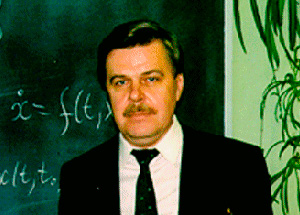
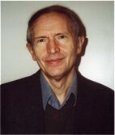
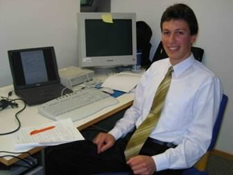
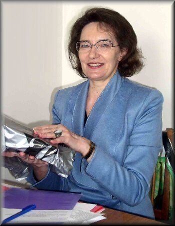

Леонов Геннадий Алексеевич
декан, заведующий кафедрой, профессор, доктор физико-математических наукчлен-корреспондент Российской Академии Наук
+7 (812) 428-6944, 428-4210 leonov@math.spbu.ru
Научные направления, темы для курсовых:
квадратичные системы, системы фазовой автоподстройки частоты, задачи стабилизации в системах с запаздыванием, моделирование процессов гидро-электро станции, размерности аттракторов, ляпуновские показатели, скрытые аттракторы и др.

Райтман Фолькер Хельмутович
Профессор, доктор физ-мат наук, DAAD invited professor, Germanyvreitmann@math.spbu.ru
Научные направления, темы для курсовых:
Оценки размерностей аттракторов, Метод Такенса для дискретных динамических систем на цилиндре, Оператор Перрона-Фробениуса для проводящей части сердца, неодномерная задача нагрева, и другие.

Кузнецов Николай Владимирович
Доцент, ученый секретарь кафедрыnkuznetsov239@gmail.com
Научные направления, темы для курсовых:
моделирование динамических систем, поиск скрытых колебаний, системы авзовой автоподстройки частоты, ляпуновские величины и теория размерности, циклы в квадратичных системах, и другие.

Селеджи Светлана Михайловна
заместитель декана, старший преподавательssm@ss1563.spb.edu